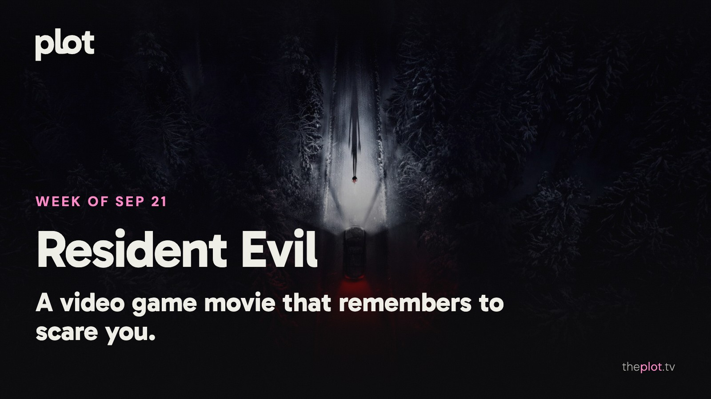

|
the week of September 21
|
|
Resident Evil has a surprisingly simple idea: put someone very unprepared in a very bad situation. The first reactions suggest it works. At home, there are competitive dancers, disgraced spies, and a new class arriving at Hillman College. This weekend, Toy Story 5 and Backrooms reach streaming. One is about the battle for your attention. The other may make you afraid to leave the couch.
 Image: Resident Evil (2026), promotional backdrop. Source: TMDB. Text overlay by Plot.
In theaters
Resident Evil sends a medical courier into a night that keeps getting worse. The first-review roundup finds critics enjoying its speed, scares, and sense of play. Zach Cregger's horror instincts look like a good match for this particular delivery job.
Practical Magic 2 brings Sandra Bullock and Nicole Kidman back to the family business. Variety finds the reunion overlong and predictable. The sisters remain the invitation; adjust your expectations for the spell itself.
The Weight gives Ethan Hawke a grim trek through the wilderness with stolen gold and very little reason to trust his traveling companions. Film Obsessive likes the physical suspense more than the finish. A dirt-under-the-fingernails alternative to another franchise night.
What everyone's talking about
Resident Evil seems to have found the pleasure in being underqualified for a horror movie. In the opening discussion, early viewers respond to a lead who feels vulnerable rather than invincible, and to the humor threaded through the panic. That matters more than recognizing every reference. You can understand being terrified and out of options without having held a controller. Keep Resident Evil on your radar.
Monster: The Lizzie Borden Story has a harder problem: what does another dramatization add? RogerEbert.com finds arresting performances and imagery inside a frustrating, overstuffed series. The Guardian also faults its handling of the subject. The objection is about the telling, rather than a shortage of lurid material. If true crime already leaves you wondering who benefits from the retelling, this one brings that question along with it.
Now on TV and Streaming
 Image: Best of the Best (2026), promotional backdrop. Source: TMDB.
Best of the Best puts two childhood friends on UCLA's competitive Bollywood-fusion dance team. It arrived on Netflix September 18. The draw is friendship under pressure, big routines, and the very college-age belief that a competition can determine your entire future. For the part of you that misses a proper dance movie.
 Image: The Fixers (2026), promotional backdrop. Source: TMDB.
The Fixers pairs a former gangster with a politician's son to clean up other people's dirty secrets. The new series landed on Netflix September 17. Pick this when you want a crime setup where the people solving the problem may be another problem.
 Image: Slow Horses (2022), promotional backdrop. Source: TMDB.
Slow Horses is back on Apple TV with season six arriving weekly from September 16. Jackson Lamb's rejected spies are on the run this time. An espionage show for anyone who suspects the office's least presentable colleague might also be its most useful.
Less scrolling. Better watching. Your weekly guide to what's on, what's coming, and what's actually worth your time.
Coming up
 Watch the official trailer on YouTube Watch the official trailer on YouTube
Forgotten Island opens Friday, September 25. Two best friends enter a world drawn from Filipino folklore, where getting home could cost them their memories of each other. DreamWorks' new adventure comes from the team behind Puss in Boots: The Last Wish. The family pick with a very grown-up worry underneath: what happens when your lives start heading in different directions?
 Watch the official trailer on YouTube Watch the official trailer on YouTube
Heart of the Beast strands Brad Pitt's Special Forces officer and his dog in Alaska after a plane crash. Paramount dates it for Friday, September 25. For the survival-thriller crowd, especially anyone who will immediately care more about the dog.
 Watch the official trailer on YouTube Watch the official trailer on YouTube
Primetime opens Friday, September 25. Robert Pattinson plays To Catch a Predator host Chris Hansen as an operation threatens his ambitions for television fame. Lance Oppenheim directs the A24 thriller. For anyone interested in the queasy place where public justice becomes entertainment.
The charts
Your trending top ten for September 21, 2026.
Want more? See the full top 20 chart on Plot.
Chart snapshot: 2026-09-17. Movement compared with 2026-09-10.
Weekend watch
 Image: Toy Story 5 (2026), promotional backdrop. Source: TMDB.
Toy Story 5 reaches Disney+ Wednesday, September 23. The toys now have to compete with a tablet for Bonnie's attention, a premise that may sound uncomfortably familiar in your living room. The streaming date was announced ahead of this week. Save Toy Story 5 for the family movie vote.
 Image: Backrooms (2026), promotional backdrop. Source: TMDB.
Backrooms comes to HBO Max Friday, September 25, the streaming announcement confirms. Kane Parsons turns the internet's fascination with empty, wrong-feeling spaces into a feature. Choose this if a room can scare you before anything walks into it. Keep Backrooms for after dark.
 Image: My Sad Dead (2026), promotional backdrop. Source: TMDB.
My Sad Dead arrives on Netflix Thursday, September 24. A retired doctor who can hear and see the dead has grief of her own to work through. Pablo Larraín directs the four-part horror series. A compact weekend commitment with something heavier underneath the haunting. Save My Sad Dead for a quiet weekend.
Do Friday-you a favor. Put these on your Plot watchlist while you still have weekday decision-making skills. The couch can handle the rest.
Be that friend. Give the group chat its weekend watchlist.
Chart and title artwork: TMDB. This newsletter uses the TMDB API but is not endorsed or certified by TMDB.
|
|
You're receiving this because you subscribed at theplot.tv.
Unsubscribe
SUSUMU HOUSE · Level 1, 63-73 Ann Street, Surry Hills, NSW 2010 |